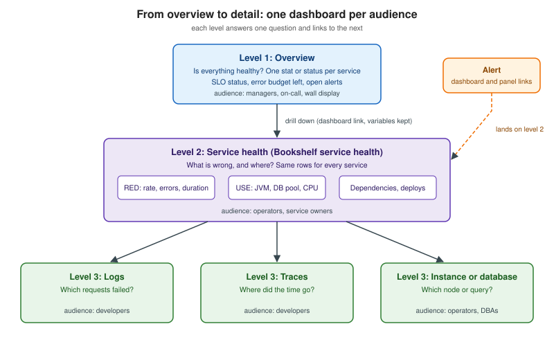

Dashboard Design Principles
|
This content was generated with the assistance of AI and should be verified against the official documentation before being relied on in production. |
Checked on 2026-11-09 against Grafana 13.3.x and Kibana 9.5.x.
A dashboard is a tool for answering a question under time pressure. The tools described in this section
(Grafana and Kibana)
make it very easy to add a panel, and that ease is the root of most bad dashboards: forty charts of whatever data was
at hand, no hierarchy, no units, and nobody who knows what "normal" looks like. This page is about the decisions you
make before opening an editor. It is independent of the tool, and the examples use the Bookshelf service (a Spring Boot
catalogue exposing Micrometer metrics at /actuator/prometheus, see
Metrics and Observability).
Picking the right chart for each question is the next page, Choosing a Visualization. Which metrics belong on a service dashboard is covered by RED, USE and the Golden Signals. How to build the dashboard in each tool is covered by Grafana: Building Dashboards and Kibana: Building Dashboards.
A dashboard should answer a question
The Grafana best-practices guide opens with the rule that a dashboard should tell a story or answer a question, and that a dashboard without a clear goal makes you ask whether it is needed at all. It adds a second rule that is easy to forget: a dashboard should reduce cognitive load, not add to it. The test it proposes is to imagine yourself, or a colleague, reading each graph during an incident at 2 AM and ask how long the meaning takes to see.
Writing the question down is the cheapest design tool there is. For the Bookshelf examples used in this section:
-
Overview: "Is the catalogue healthy for readers right now, and are we inside our service level objective?"
-
Service health: "Which part of the request path is failing or slow, and since when?"
-
Detail: "Which requests, queries or instances are responsible?"
If a panel does not help answer the question of its dashboard, it belongs on another dashboard or nowhere.
Source: Grafana: Dashboard best practices (section "Best practices for creating dashboards").
Audience first, then data, then context
A useful design order, taught in the dashboard chapters of the Grafana books listed below, is audience, then data, then context. Each step constrains the next.
Audience
Start with who will look at the dashboard, because the same service needs different views for different readers. Typical personas, adapted from the ones the Chapman and Holmes book uses:
| Persona | What they need | Where they look |
|---|---|---|
Developer |
Traffic through the code they own; errors in enough detail to find a bug; traces and logs one click away. |
Laptop, while investigating. |
Operator or on-call engineer |
Problems as they happen, with obvious state colours; readable at a glance; a path from symptom to cause. |
Wall display for the overview, laptop during an incident. |
Service owner |
The wider picture: which service is affected, who owns the fix, whether the SLO is at risk. |
Laptop, in reviews and during incidents. |
Product or business owner |
User-visible health: availability, latency users feel, business throughput such as books borrowed per minute. |
Laptop or phone; rarely drills down. |
The McCollam book makes the rule explicit: for any non-trivial system one view cannot serve every audience, because adding charts for one group adds noise for the others, so build one dashboard per audience. Choose one reader as the primary user and design for that person.
Data
Once the reader is known, list the information they need, starting from the conclusion they must reach and working backwards to the data that supports it. McCollam’s exercise is to write each panel as text first: a short title, the data, the units, a description and the reasoning for including it. If the list contains data you do not collect, that is the moment to add instrumentation (see Telemetry Collection Pipelines), not to substitute whatever happens to be available. The same books also warn to check that the data is what you think it is, for example that a rate averaged per second is not compared to one averaged per minute (see Metric Types and Aggregation).
A panel specification can be as small as this. It is not code for either tool; it is a template to keep in the dashboard’s Text or Markdown panel, or in the repository next to the dashboard JSON:
Panel: Error ratio (5xx)
Question: Are readers getting errors right now?
Data: 5xx requests / all requests, per route, 5 minute rate
Unit: percent (0-100), not a fraction
Thresholds: yellow at 0.5 percent, red at 1 percent (the alert fires at 1 percent for 5 minutes)
Drill-down: click opens the Logs dashboard filtered to level=ERROR and the same route
Owner: catalogue teamSource: Grafana: Dashboard best practices ("Document dashboards and panels"); the template format follows the exercise in the McCollam book chapter 6.
Context
Context is what makes a number interpretable: the threshold and why it exists, the previous period, the SLO, the deploy that just happened. Show thresholds as lines or coloured regions, compare with an earlier period when seasonality matters, and overlay annotations for deployments and incidents (see Grafana: Annotations and Links). If something critical is not on the dashboard, say so and link to where it is.
An overview to detail hierarchy
Instead of one big dashboard, build a small hierarchy where each level answers one question and links to the next.

-
Level 1, overview. One tile per service or per SLO: status, error budget remaining, open alerts. Designed for a wall display and for a manager glancing at it. It does not contain time series detail.
-
Level 2, service health. The dashboard people use during an incident. It follows a fixed layout, typically RED rows for request-driven code and USE rows for resources, one row per service ordered along the data flow, as the Grafana guide suggests. The Bookshelf "Bookshelf service health" dashboard in the lab is this level.
-
Level 3, detail. Logs, traces, a single instance or a database. These are usually reached from level 2 by a link that keeps the current time range and variables, so the reader stays on the same incident window.
Alerts link into level 2. An alert that contains the rule’s dashboard and panel link, the service and the time window lets the receiver land where the symptom is visible (see Designing Actionable Alerts). The Grafana maturity model treats "no alerts link to relevant dashboards" as a sign of a low-maturity setup.
How each tool does the linking:
-
Grafana has dashboard links, panel links, data links and variables carried in the URL (Annotations and Links, Variables).
-
Kibana has dashboard, URL and Discover drilldowns, plus dashboard controls (Controls and Drilldowns).
Source: Grafana: Dashboard best practices ("Medium: Methodical Dashboards"); Kibana: Drilldowns.
Information density and where it will be shown
How much to put on a dashboard depends on where it is read. The Salituro book distinguishes two contexts: a workstation screen read over a moderate period, where high information density is acceptable, and a large display read from a distance by many people, where less information and larger elements work better. The Chapman and Holmes book makes the same point with a third question next to audience and requirements: where will it be viewed, a big screen or a phone?
Practical consequences:
-
Desk dashboards can have many panels, but put the most important ones at the top, because the viewer controls the scroll and the first screen is what is seen. Kibana’s own layout guidance is to place key metrics at the top and arrange content from summary metrics to trends to detailed breakdowns.
-
Wall or kiosk displays have no scrolling and no hovering. Put the highest-priority information at the top left and everything else right and below, use few, large panels, and use state colours. Grafana’s kiosk mode hides the main menu and navigation bar and is turned off with the
Esckey; thed+kshortcut toggles it. Combine it with a playlist when several dashboards must rotate (see Grafana: Sharing and Reporting). -
Phones need a narrow single column, so keep the first screen to the status panels.
Sources: Grafana: Use dashboards (kiosk mode); Kibana: Organize dashboard panels (layout guidance).
Layout rules that make dashboards readable
-
One reading order. Summary at the top, trends in the middle, breakdowns at the bottom. Kibana’s guidance gives suggested widths (single metrics about a quarter width, bar, gauge and pie charts about half width, time series between a third and full width, tables half to full width) and recommends equal heights for panels that sit side by side. Grafana lets you group panels in rows or tabs; collapsed rows and Kibana’s collapsible sections are the right place for secondary content, and Kibana notes that only expanded sections load their content, which also speeds up the dashboard.
-
Do not use text panels as headings. Kibana’s guide advises section labels and descriptive titles instead, since a text panel consumes space without showing data.
-
Same unit, same scale, same colour for the same thing. If one latency panel is in milliseconds and the next in seconds the reader has to convert under stress. Set the unit in the field configuration, not in the panel title, and normalise where a ratio is clearer than an absolute (CPU as a percentage of cores, as the Grafana guide suggests, so readers need not know the core count).
-
Meaningful colour. Colour should carry state, not decorate. Use one scheme for good, warning and bad across the whole hierarchy, with thresholds (see Grafana: Field Configuration). Do not rely on colour alone for the information. Lens offers colour mapping to keep the same term in the same colour across the visualizations of a dashboard.
-
Separate magnitudes. When two series differ by orders of magnitude, an aggregate hides the small one. The Grafana guide says to split dashboards, or use separate axes, when magnitudes differ so that detail is not buried. Be cautious with dual axes (see Choosing a Visualization) and with stacked graphs, which the Grafana guide says can mislead and hide data.
-
Refresh at the rate of the data. Grafana does not auto-refresh a dashboard by default; set an interval that matches how often the data changes, because unnecessary refresh adds load to the network and the backend.
-
Describe it. Add a Text or Markdown panel with the dashboard’s purpose and useful links, and panel descriptions that appear on hover.
Sources: Grafana: Dashboard best practices; Kibana: Organize dashboard panels; Kibana: Lens ("Recommendations").
Applying RED and USE layouts
The two most common layouts are covered in depth in RED, USE and the Golden Signals. The Grafana guide describes them as strategies for deciding what to show:
-
RED (rate, errors, duration) for services, which it calls a proxy for user experience and suitable for alerting and SLAs. It reports symptoms.
-
USE (utilization, saturation, errors) for resources such as CPU, memory and network devices. It reports causes.
-
The four golden signals from the Google SRE book (latency, traffic, errors and saturation) are RED plus saturation.
A Bookshelf service-health dashboard following those methods has this layout:
| Row | Contents |
|---|---|
Status |
Stat panels for availability, error ratio and p95 latency with thresholds, and the SLO error budget remaining. |
Requests (R, E, D) |
Request rate by route, 5xx ratio by route, latency percentiles from the histogram buckets. |
Resources (U, S, E) |
JVM heap and GC pause, HTTP and database connection pool usage and waits, CPU and memory of the container. |
Dependencies |
PostgreSQL query time and errors, outbound calls. |
Events |
Annotations for deployments, a logs panel limited to errors, and trace links from slow requests. |
Variables for the environment, instance and route keep one dashboard serving every environment instead of one copy per environment, which is the main cure for sprawl (next section).
Source: Grafana: Dashboard best practices ("Common observability strategies"); Google SRE book: Monitoring Distributed Systems ("The Four Golden Signals").
Naming, folders and tags
-
Use names that say what the dashboard is for and, for the service level, which service. The Grafana guide suggests putting an owner’s name or initials in the name or as a tag, naming experiments with a
TESTorTMPmarker, and deleting temporary dashboards when finished. -
Organise by team or product in folders and use folder permissions to control who can edit (see Grafana: Users, Teams and Permissions). Use tags for cross-cutting groupings such as
bookshelforslo. When you copy a dashboard, rename it and do not copy its tags, because tags drive search and copied tags cause false matches. -
Kibana dashboards can be tagged and found through the dashboard list; spaces separate teams or environments (see Kibana: Spaces, Roles and Privileges). Dashboards created by an integration are marked
managedand cannot be edited directly: duplicate one before changing it. -
Keep a dashboard of dashboards, or cross-reference with links, a Dashboard list panel filtered by tag or folder, or a Markdown navigation panel.
Sources: Grafana: Dashboard best practices ("Best practices for managing dashboards"); Kibana: Dashboards.
Avoiding sprawl and the maturity model
Dashboard sprawl is the uncontrolled growth of dashboards until the right one cannot be found. The Grafana guide names the most common cause: duplicating a dashboard and changing one thing. Its remedies are to avoid copies without significant changes (copies miss upstream fixes and new metrics), use link and variable parameters instead, remove unneeded dashboards on a schedule, and use the usage insights described in Grafana: Sharing and Reporting (an Enterprise/Cloud capability) to find unused ones.
The guide also gives a three-level maturity model that you can use as a periodic checklist:
| Level | Signs | How to move up |
|---|---|---|
Low (default) |
Anyone edits dashboards; many copies; one-off dashboards live forever; JSON not in version control; people spend time searching; alerts do not link to dashboards. |
Pick an observability strategy and write it down; start naming and tagging. |
Medium (methodical) |
Template variables prevent sprawl; dashboards follow a strategy and form a hierarchy with drill-downs; one row per service in RED layout; expressive charts with normalised axes; directed browsing through variables and links; dashboard JSON under version control. |
Automate generation and review; track usage. |
High (optimised) |
Sprawl is reduced actively with a list of approved dashboards and usage tracking; dashboards are generated by code for consistency; viewers change what they see through variables rather than by editing; experiments run on a separate instance and proven dashboards are promoted. |
Maintain it: review on a schedule. |
Keeping dashboards in Git, reviewing changes and promoting between environments is the subject of Observability as Code.
Source: Grafana: Dashboard best practices ("Dashboard management maturity model").
What can go wrong
-
Chart soup. A dashboard with no question has no end. Fix by writing the question and deleting panels that do not answer it.
-
Different units for the same quantity across panels or dashboards. Fix with unit and decimals in field configuration and a shared template.
-
The average hides the tail. Latency shown as a mean looks healthy while the p99 is bad; see Metric Types and Aggregation.
-
Edited in the browser, lost on the next release. Without version control no one can tell who changed a threshold.
-
Dashboards no one links to. If alerts do not link to them, nobody opens them during an incident.
-
Too much work per refresh. Many panels, short refresh and expensive queries load the backend; use collapsible sections or collapsed rows (only expanded content is loaded in Kibana), recording rules or sampled queries.
Verify it in the lab
After the lab is running (see Hands-on Lab) and the "Bookshelf service health" dashboard exists in either tool:
-
Ask a colleague who has not seen it to answer "Is the catalogue healthy?" in ten seconds. If they cannot, simplify level 1.
-
Stop the Bookshelf container and check that the first screen shows the problem without scrolling or hovering.
-
Follow the alert link in the received webhook payload and confirm that it lands on the service dashboard with the right time range and service selected.
-
Check that every panel has a unit, a description and, where a threshold exists, the same threshold the alert uses.
-
Count the dashboards in the folder and confirm each has an owner tag.
In the books
The McCollam book (chapter 6, "Dashboard Design", and chapter 7, "Workflow") is the clearest source for the audience, data and context method, overview versus detail, and links, and its Grafana 8.2/8.3 screens are outdated while the reasoning is not. The Salituro book (chapter 9) frames the question of conveying information, visual context and information density, including desk versus kiosk displays; its InfluxDB and Flux examples no longer apply. The Chapman and Holmes book (chapter 8) adds personas and a system overview example, written for Grafana 10.2. What has changed since: dashboards are now dynamic by default with rows, tabs and an auto grid layout (see Grafana: Building Dashboards), the Graph panel the books use was removed in Grafana 12, public dashboards are now externally shared dashboards, and Kibana dashboards in the Chhajed, Melachi and Shah books are built from visualizations that are now Lens, with the legacy editors kept only for existing content.